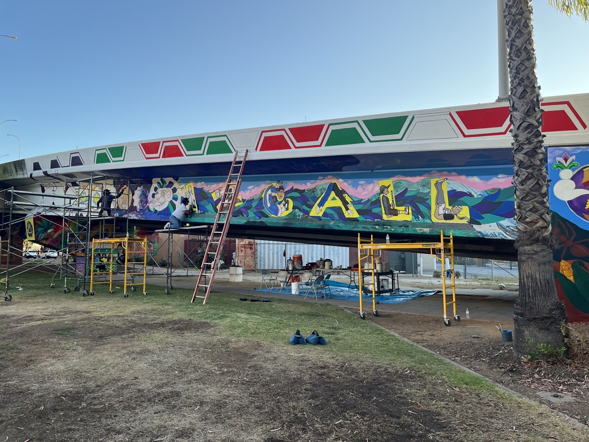
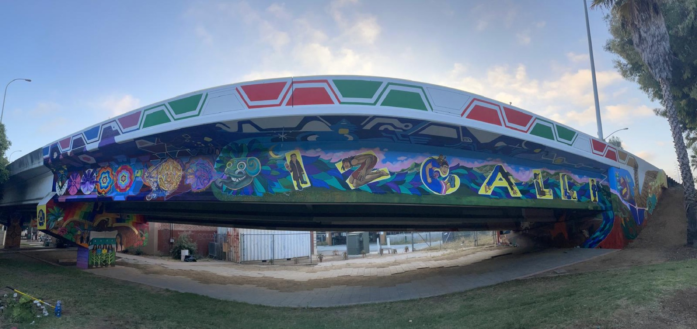
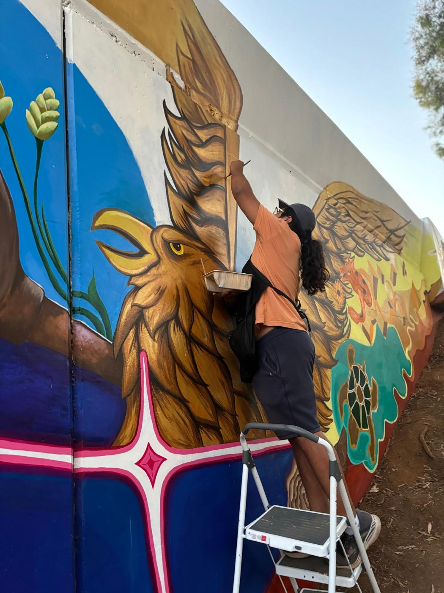
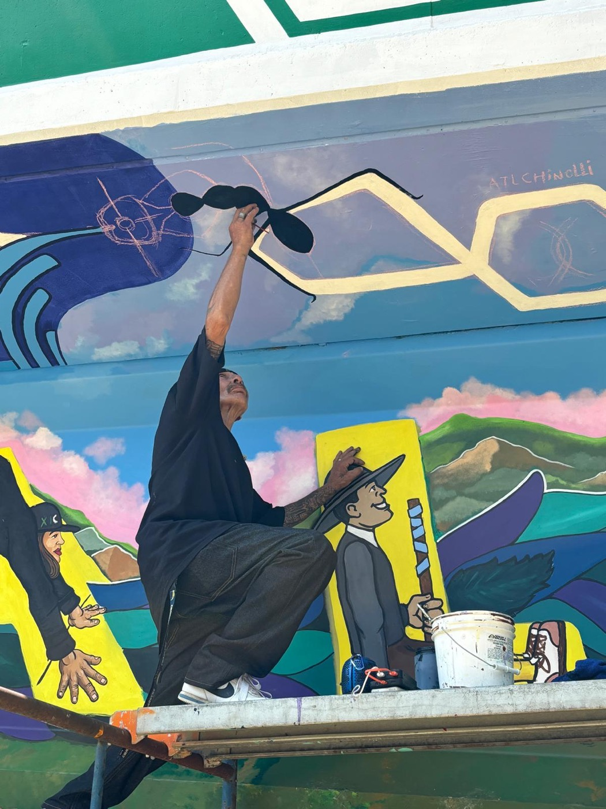
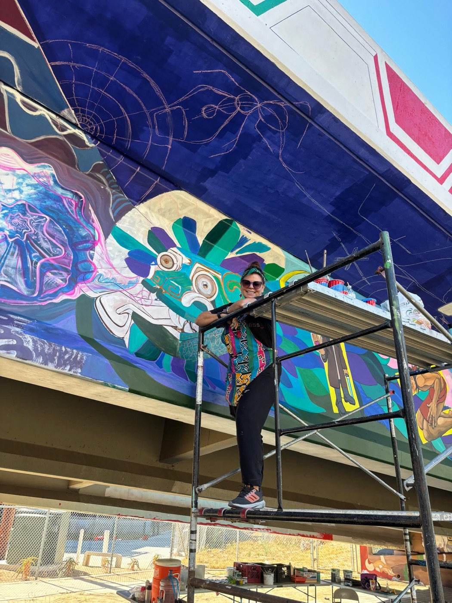
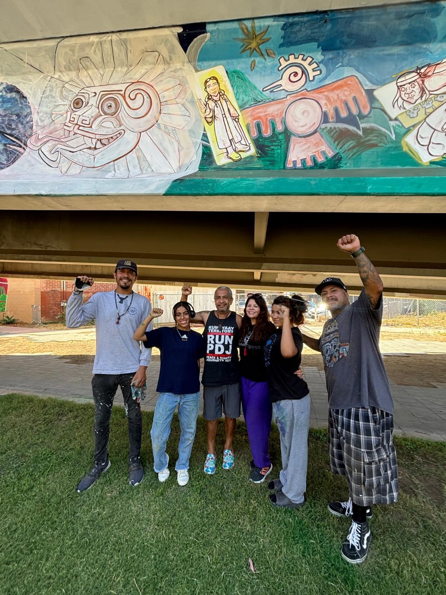

In the heart of Barrio Logan, Izcalli's mural takes its place among the most storied murals in the country.
Beneath the San Diego–Coronado Bridge in Barrio Logan lies Chicano Park, one of the most significant sites of Chicano cultural and political history in the United States. In 1970, after years of displacement by freeway and bridge construction, the Barrio Logan community reclaimed the land beneath the bridge through direct action, occupying the site until the city agreed to dedicate it as a park.
In the decades since, the park's towering concrete pylons have become canvases for the largest collection of outdoor murals in the country, depicting Mexican and Chicano history, Indigenous heritage, and the community's enduring struggle for justice. Today Chicano Park is recognized as a National Historic Landmark.

Izcalli's mural is part of this living gallery, carrying the organization's name and its Maya-Nahua imagery into the cultural landscape of Barrio Logan. It stands where Izcalli's youth theater takes the stage and where the community gathers each year for Chicano Park Day, connecting Izcalli's cultural-healing work to the park's history of resistance and renewal.

Izcalli's mural is painted and renewed by community artists. These images capture the work in progress, high on the scaffolding beneath the bridge.



